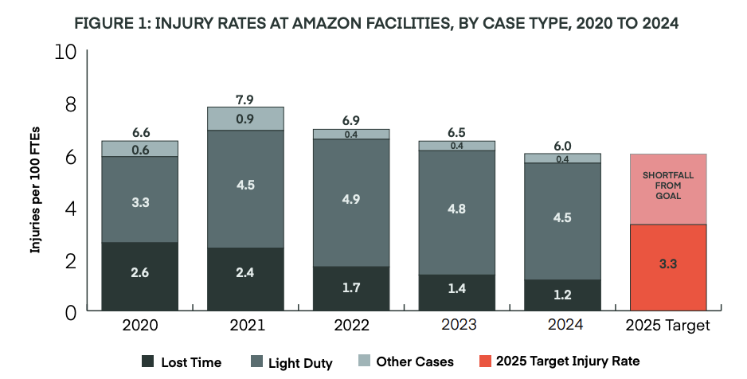

Introduction
Logistics, i.e. the transportation and warehousing of goods, has grown tremendously over the last two decades with workers having taken on the brunt of the labor. Meanwhile, executives have increased their margins dramatically. Despite it now being one of the most essential industries for the capitalist system, working conditions remain extremely poor. Delivery driving in particular has been ranked the 6th most dangerous job in America.1
In this pamphlet, we aim to examine the experience of logistics workers. We began by speaking with local delivery drivers in Austin about their working conditions and found that weather conditions and subcontracting were among their chief complaints, prompting us to explore these issues further.
How does weather affect you at work?
When we inquired about how the weather affects drivers at work, what we found was unsurprising — the brutal Texas heat only makes their jobs harder. There were only a few drivers that had functioning AC or heat in their vehicle. The drivers that didn’t have functioning AC had small personal fans by their driver seat, but there was nothing in their cargo trunks. Although none of the workers we talked to mentioned an exact temperature, NBC reported on temperatures in the delivery vans cargo trunk. UPS drivers submitted photos to NBC of their cargo trunk thermometer readings that reached as high as 152 degrees.2 Fedex warehouse workers on Reddit reported temperatures getting as high as 130 degrees in buildings with no ventilation and employees regularly passing out due to heat exhaustion. Amazon workers on Reddit, similar to Fedex, reported high temperatures in their warehouse with employees regularly passing out as temperatures soared into the 90's and 100's. From collected data in 2015-2019, OSHA recorded 213 total heat related hospitalizations at Fedex, USPS, and UPS combined. USPS and UPS had more heat related hospitalizations than any US company in any industry. This only covers the incidents that were reported.
| Employer | Hospitalizations (US) | Total US Workers | Hospitalizations (Federal OSHA States) | Estimated Workers (Federal OSHA States) | Hospitalization Rate per 100,000 Workers/Year | Acute Kidney Injury Cases |
|---|---|---|---|---|---|---|
| USPS | 121 (57%) | 523,790 | 88 (49%) | 305,370 | 5.8 | 6 |
| UPS | 87 (41%) | 240,000 | 86 (48%) | 139,920 | 12.3 | 2 |
| FedEx | 5 (2%) | 420,000 | 5 (3%) | 244,860 | 0.4 | 0 |
After seeing these numbers, we asked ourselves, what have these companies, and our government, done to protect the workers of one of the most critical industries in the US? There are currently no federal or state protections for logistics workers, or any other workers, from extreme temperatures of any kind. The Trump administration has a “Regulatory Freeze Pending Review” in place, meaning that all executive departments and agencies must refrain from proposing or issuing “any rule in any manner” until a department or agency head appointed by the president reviews and approves the proposed rule. This means OSHA’s proposed rule for “Heat Injury and Illness Prevention in Outdoor and Indoor Work Settings”4 will not go into effect. This would have forced all employers to provide extra heat protections for workers once the heat index reached 80 degrees. However, even if their proposal had been published, these major companies likely would have put up a fight.
These companies are well aware of the danger their workers face and often try their best to cover it up. In June of 2022, Esteban Chavez, a 24-year-old UPS driver in Palmdale, California, was found dead in his truck while working his route on a 90-plus-degree day.5 He died from “sudden cardiac dysfunction,” but his family believes it was due to heatstroke. UPS did not want to comment on the reason for his death. In 2024, Wendy Johnson, a 51-year-old and 20-year veteran at the USPS, died working her route on a 95-degree day in Fayetteville, North Carolina.6 Her van was confirmed to have no AC and her family members believe she died from a heat stroke. But of course USPS did not want to comment on the reason for her death, only stating they were doing an internal investigation. Amazon has even rolled out an update for their fleet of EV vehicles that automatically turns off the drivers’ AC if the driver isn’t inside for more than 30 seconds, despite their knowledge of how dangerous the heat can be.7 Of course, Amazon has denied this is true.
The risks facing logistics workers don’t end with delivery drivers. While delivery drivers are exposed to extreme temperatures throughout their route, warehouse workers face many of the same risks inside their facilities. In Suffolk, Virginia, Amazon workers at the ORF3 fulfillment center haven’t had working AC in months. One worker claimed, “people pass out, and an ambulance comes, and nobody talks about it. It’s just normalized,” [Jasmine] Saunders said. Amazon replied alleging that only a small portion of units went out and insisted the temperature maintained an average of 76 degrees, but Saunders disputed this. In fact, she stated that workers were actually expected to increase productivity and had been disciplined for failing to do so regardless of the heat. She has filed a complaint to OSHA, but nothing has yet to be done.8
At other facilities Amazon has found ways to skirt employees being hospitalized by using “AmCare,” their in-house first aid that workers have compared to a school nurse. Any injured worker sent here are often given nothing but an ice pack and are sent back to work. AmCare does not log any reports unless they determine the individual unable to return to work, but of course admitting that would be against their best interest. Amazon denies this stating that, “ensuring our employees have access to onsite first-aid and to their care of choice is incredibly important to us because the safety of our team and our partners is our top priority.” But it’s clear Amazon doesn’t truly value their employees’ safety. In 2024 it was discovered that although they employed 39% of US warehouse workers, they somehow managed to account for 56% of all serious injuries in the industry.9

These instances help highlight how extreme heat, cold, and other environmental conditions play a crucial role in the working conditions of logistics workers. These companies treat safety measures such as air conditioning, heating, first aid, and proper equipment as nothing more than an expense that can be minimized. Capitalists continually put profits above people even though spending money on sufficient safety measures protects workers’ lives by preventing injury, illness, and death.
Subcontracting
Environmental factors aren’t the only thing that can negatively affect workers. There is an increasingly common issue facing the logistics industry that might be hurting you, and that’s subcontracting. Subcontracting works by third-party companies being directly employed by larger ones, such as Amazon and FedEx, where this is a common practice. Amazon currently employs about 740,000 workers across its warehouses and distribution centers, and 390,000 drivers who are employed by 4,400 contractors. This happens through Amazon’s Delivery Service Partner (DSP) program. Amazon does not claim that any of these workers are Amazon employees, even though they wear Amazon vests, drive Amazon-branded vans, and fulfill Amazon orders.
FedEx uses 7,500 independent contractors employing roughly 52,000 workers. However, the number of employees is expected to change soon as FedEx has rolled out a new plan they coined “Network 2.0” to employ fewer workers and increase volume at remaining facilities. They have closed more than 200 stations, plan on “optimizing” over 360 facilities, and still plan to close more than 475 facilities, about 30% of what they currently own, by the end of 2027.10 While they roll out plans for layoffs, they have no plans to change their subcontracting structure to protect their employees. This subcontracting system allows for companies to offset their responsibility of being the direct employer for all their workers. They instead have third-party companies come in and open their own fulfillment centers where they often hire staff at lower wages, worse benefits, and offer no real job security.
The drivers we talked to in Austin had a wide variety of experiences, and it all depended on their contractor. We had one individual tell us in the short couple of years they had worked with FedEx their location had been turned over by three different contractors since they started. It is commonplace that these contractors have high turnover rates and that they each have different rules. Sometimes contractors will offer workers better pay, hours, and benefits than others, but it can all change at the drop of a hat. As mentioned, FedEx has closed 200 stations, and multiple Reddit users in the “Fedexers” subreddit mentioned how they were not given the required notice for layoffs from their contractors. Many contractors notified their employees the day of that they would be losing their job with no promise of job security with another contractor or transfer to a new location. These contractors decided to wait until the last minute to inform their employees so that they wouldn’t quit or try to look for other work before their location closed.
Amazon’s DSP employees face similar issues but also have an even more problematic program, Amazon Flex. Flex allows individuals to become independent contractors for Amazon using their own vehicles to deliver packages by signing up through its app (similar to Uber, DoorDash, etc.). Although they are technically classified as “independent contractors,” they are still Amazon employees. Amazon claims that Flex workers get to be completely flexible with their time, but Amazon actually uses an algorithm named CONDOR that batches and routes deliveries, determining the drivers’ total workload. This means it decides the number of packages that need to be delivered, and the timeframe in which to do it. So where exactly does a Flex worker get an independent choice? Amazon also isn’t transparent about Flex workers’ actual pay. They claim workers can earn $18–$25 an hour, but a 2018 study found that the average Flex earnings were just $5.30 an hour after expenses.11 Not only do they make less than federal minimum wage, but they also don’t receive any of the traditional job protections or benefits such as overtime or health insurance.
These issues are not a result of the individual decisions of subcontractors or even the companies themselves; they are connected to the contradictions of capitalism. As technology develops, capitalists require fewer workers to produce the same or greater volume. Competition between capitalists pushes this further, forcing them to reduce costs to increase output and their corresponding profit. The same process operates within the capitalist class: the large logistics companies and their contractors compete with one another, but their competition does not eliminate their dependence on the labor of the working class.
Labor power deteriorates when workers are pushed to the extremes as well. A worker at a contractor offering more hours and better pay may earn more fiscally, but continually being overworked can increase exhaustion and burnout. On the other hand, when workers are unable to get sufficient hours and aren’t receiving enough wages to live, this increases the risk of malnutrition and other forms of deprivation. In either instance, being overworked or underworked can weaken labor power, pushing workers towards the industrial reserve army. Workers who cannot sustain themselves through wages or who are forced to leave due to exhaustion may then have to rely on government assistance to survive, such as food stamps or welfare. These programs intended to protect workers were not made available because of pity; many social protections were historically won through working-class struggle.
Unions
Unions are a place where workers should be able to receive protections against their employers to help combat these issues. If you work with UPS you may be familiar with your union representation, Teamsters. Or if you are with USPS you may be familiar with the National Association of Letter Carriers, the American Postal Workers Union, or some of the other unions affiliated with USPS. 70% of UPS’s workforce is represented by a union and 91% of the USPS workforce is represented by a union. In 2022, workers at Amazon’s JFK8 fulfillment center in Staten Island, New York, voted to be represented by the Amazon Labor Union (still amounting to less than 1% of Amazon’s workforce being unionized), and FedEx’s pilots are unionized through the Air Line Pilots Association.
Even though UPS and USPS are unionized at a significantly higher rate than Amazon and FedEx, they still face many of the same issues. Regardless, there have been some concessions made to help improve economic and working conditions for unionized workers. For example, Teamsters has been addressing the heat issue for UPS workers by negotiating a deal to add AC to 28,000 vehicles. It is a slow-moving process, with 2,000 vehicles retrofitted in June of this year and 3,000 more expected by 2027. The slow-moving nature is purposeful, though, partly because of the red tape UPS puts up but also because of Teamsters themselves.
Teamsters has a history of “selling out”; their union representation has often been more concerned with maintaining contracts with capitalists than truly fighting for the rights of the working class. They often discourage workers against engaging in truly revolutionary activity and treat workers as members of their institution rather than participants of the broader class struggle. Real leadership goes beyond petty concessions and stands for the economic and political victory of the working class.
Although it can at times be disheartening to see the issues within your union or others, there is a general sentiment that can be taken away. The truth is that there is power behind the workers, more than it might appear. Unions arose due to the antagonistic contradictions under capitalism, more specifically between the working class and capitalists. As a part of the working class yourself, it’s imperative to understand the history of your class struggle to better understand your current material conditions.
The most effective things that unions have historically done for workers is to help organize strikes, often rather reluctantly as a result of the pressure workers put on the unions. Strikes are extremely effective because companies cannot generate revenue or operate if there is no one to do the work. One of the most effective strikes is the 1997 UPS strike led by the Teamsters, which shut down UPS for 15 days and cost the company hundreds of millions of dollars.12 There was also the wildcat strike of 1970, in which over 200,000 US postal workers fought for eight days to gain collective bargaining rights on their wages, benefits, and working conditions. It led to a major overhaul of the postal system that became the USPS we know today.13 This strike only happened because the postal workers went against their union leadership. Even with the rights to bargain, postal workers still did not get the right to strike, which is still true of all workers in the US today. Although unions are necessary for workers to struggle against the capitalist class, there are clear limitations. Trade unionism is riddled with bureaucratic red tape and often gives workers nothing more than concessions. Comparing the early stages of these unions to where they are today, there is a clear need to push further.
From Exploitation to Organization
Poor working conditions expose more than just the individual company or even a single industry making bad decisions; it is a glimpse into the reality of the working class as a whole. A driver dying on their route, a warehouse worker collapsing from heat exhaustion, hundreds of thousands of jobs suddenly disappearing because of subcontractors, all arise from the irreconcilable antagonisms between labor and capital. The worker must sell their labor to live, and the companies that depend on that labor organize production based around the never-ending pursuit of profit. Capitalists have incentive to extract as much labor as possible from workers while simultaneously keeping costs as low as possible to maximize their profit.
Despite this, the history of the labor movement, both in America and overseas, has demonstrated that there is collective strength among the working class. A single worker can be ignored, but an organized working class cannot; they can stand together to resist and fight to take control of the society they already keep running.
Sources
- Bieber, Christy. 2023. “10 Most Dangerous Jobs In America.” Forbes, July 12, 2023. https://www.forbes.com/advisor/legal/workers-comp/most-dangerous-jobs-america/#methodology_section.
- “UPS Delivery Drivers at Risk of Heat-Related Illnesses.” n.d. NBC News. Accessed October 4, 2026. https://www.nbcnews.com/business/economy/hot-seat-ups-delivery-drivers-are-risk-heat-stroke-kidney-n1031321.
- C, Tannis. 2020. “Heat Illness and Renal Injury in Mail and Package Delivery Workers.” CDC.gov 63 (November). https://stacks.cdc.gov/view/cdc/224549.
- U.S. Department of Labor / Occupational Safety and Health Administration (OSHA). 2024. “Heat Injury and Illness Prevention in Outdoor and Indoor Work Settings.” Proposed regulation. Washington, D.C.: U.S. Department of Labor / OSHA. https://www.osha.gov/sites/default/files/Heat-NPRM-Final-Background-to-Sum-Ex.pdf.
- Kaye, Danielle. 2023. “Delivery Drivers Want Protection against Heat. But It’s an Uphill Battle.” WBUR, July 20, 2023. https://www.npr.org/2023/07/20/1188282961/delivery-drivers-want-protection-against-heat-but-its-an-uphill-battle.
- Limehouse, Jonathan. 2024. “North Carolina Postal Worker Died in Truck from Possible Heat Stroke, Family Says.” USA Today, July 15, 2024. https://www.usatoday.com/story/news/nation/2024/07/15/usps-worker-heat-stroke-death-wendy-johnson/74414304007/.
- Maiberg, Emanuel. 2026. “Software Update Automatically Turns off Amazon Delivery Drivers’ AC During Dangerous Summer Heat.” 404 Media, June 11, 2026. https://www.404media.co/software-update-automatically-turns-off-amazon-delivery-drivers-ac-during-dangerous-summer-heat/.
- Lytle, Derek. 2026. “Amazon Workers in Suffolk Dealing with Months-Long Cooling Issues.” 13 News Now, June 25, 2026. https://www.13newsnow.com/article/news/local/mycity/suffolk/amazon-workers-cooling-issues-suffolk-va/291-2897fc5a-62c0-4400-8410-8a5bf216f671.
- The Strategic Organizing Center. 2025. “Failure to Deliver: Amazon Falls Short on Safety.” Report. https://thesoc.org/wp-content/uploads/2025/05/May-2025_Strategic-Organizing-Center_Report-x-Failure-To-Deliver.pdf.
- Garland, Max. 2025. “FedEx Network 2.0: Tracking Closures, Layoffs across the US.” Supply Chain Dive, July 14, 2025. https://www.supplychaindive.com/news/fedex-network-2-layoffs-closings-status/750513/.
- Pinto, Maya. 2025. “Delivering Precarity: How Amazon Flex’s Labor Model Harms Workers and What to Do About It — Introduction and Overview.” https://www.nelp.org/app/uploads/2025/07/Delivering-Precarity-How-Amazon-Flex-Harms-Workers-and-What-to-Do-About-It.pdf.
- “1997 United Parcel Service Strike.” 2023. Wikipedia, November 1, 2023. https://en.wikipedia.org/wiki/1997_United_Parcel_Service_strike.
- “1970 United States Postal Strike.” 2024. Wikipedia, February 12, 2024. https://en.wikipedia.org/wiki/1970_United_States_postal_strike.